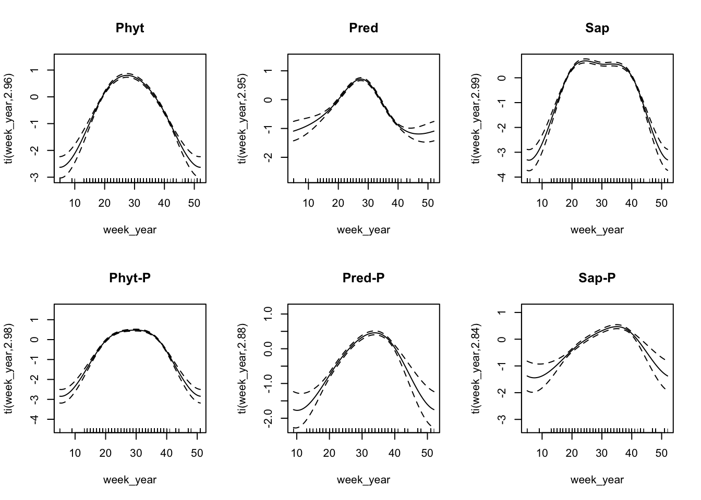
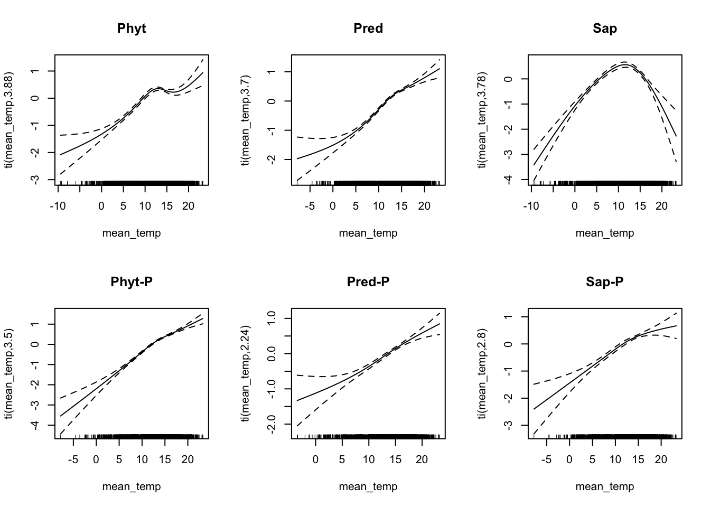
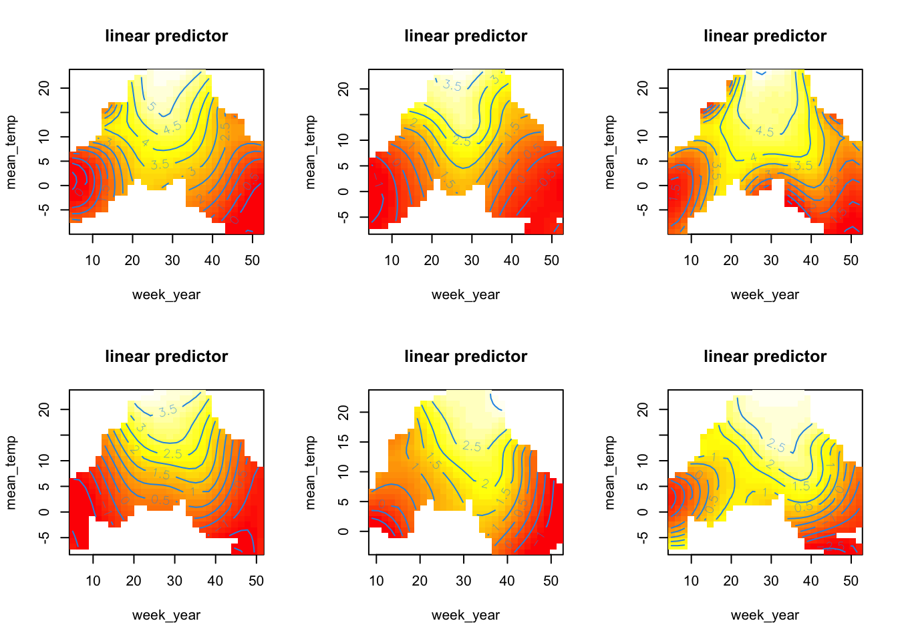
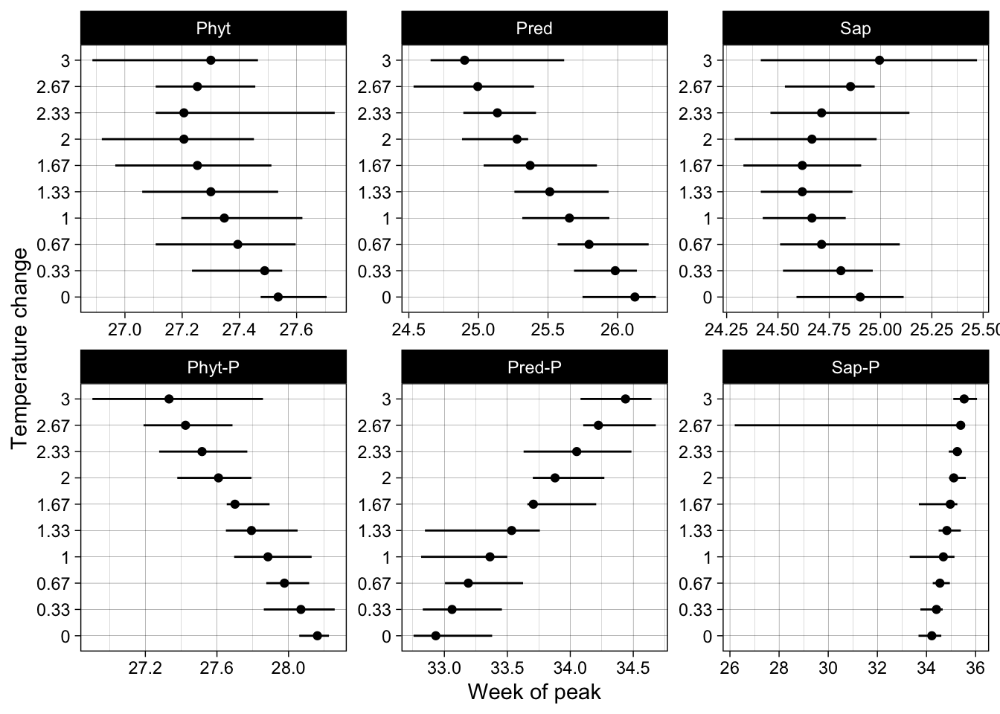

Last updated: 2024-01-17
Checks: 7 0
Knit directory: Niche-phenology/
This reproducible R Markdown analysis was created with workflowr (version 1.7.1). The Checks tab describes the reproducibility checks that were applied when the results were created. The Past versions tab lists the development history.
Great! Since the R Markdown file has been committed to the Git repository, you know the exact version of the code that produced these results.
Great job! The global environment was empty. Objects defined in the global environment can affect the analysis in your R Markdown file in unknown ways. For reproduciblity it’s best to always run the code in an empty environment.
The command set.seed(20240109) was run prior to running
the code in the R Markdown file. Setting a seed ensures that any results
that rely on randomness, e.g. subsampling or permutations, are
reproducible.
Great job! Recording the operating system, R version, and package versions is critical for reproducibility.
Nice! There were no cached chunks for this analysis, so you can be confident that you successfully produced the results during this run.
Great job! Using relative paths to the files within your workflowr project makes it easier to run your code on other machines.
Great! You are using Git for version control. Tracking code development and connecting the code version to the results is critical for reproducibility.
The results in this page were generated with repository version bc09a81. See the Past versions tab to see a history of the changes made to the R Markdown and HTML files.
Note that you need to be careful to ensure that all relevant files for
the analysis have been committed to Git prior to generating the results
(you can use wflow_publish or
wflow_git_commit). workflowr only checks the R Markdown
file, but you know if there are other scripts or data files that it
depends on. Below is the status of the Git repository when the results
were generated:
Ignored files:
Ignored: .DS_Store
Ignored: .Rhistory
Ignored: .Rproj.user/
Untracked files:
Untracked: code/functions.R
Untracked: data/model_selection_prelim.rds
Untracked: data/niche_SR_data.rds
Untracked: data/weekly_temp.rds
Untracked: output/prelim_gam_fits.rds
Note that any generated files, e.g. HTML, png, CSS, etc., are not included in this status report because it is ok for generated content to have uncommitted changes.
These are the previous versions of the repository in which changes were
made to the R Markdown (analysis/preliminary_analysis.Rmd)
and HTML (docs/preliminary_analysis.html) files. If you’ve
configured a remote Git repository (see ?wflow_git_remote),
click on the hyperlinks in the table below to view the files as they
were in that past version.
| File | Version | Author | Date | Message |
|---|---|---|---|---|
| html | 034287d | Rgoodsell | 2024-01-17 | Build site. |
| html | 221e1b1 | Rgoodsell | 2024-01-09 | Build site. |
| html | e7e4f90 | Rgoodsell | 2024-01-09 | Build site. |
| Rmd | a4c515d | Rgoodsell | 2024-01-09 | wflow_publish(files = c("analysis/preliminary_analysis.Rmd", |
| html | e0b4cdf | Rgoodsell | 2024-01-09 | Build site. |
| html | ea59089 | Rgoodsell | 2024-01-09 | Build site. |
| html | a784053 | Rgoodsell | 2024-01-09 | Build site. |
| html | 662d8d4 | Rgoodsell | 2024-01-09 | Build site. |
| Rmd | f97683a | Rgoodsell | 2024-01-09 | wflow_publish(files = "analysis/preliminary_analysis.Rmd") |
This site serves to document the preliminary analyses aimed at investigating the seasonal dynamics and phenology of feeding guild communities using the IBA data. Organisms in the IBA data can be grouped by their feeding niche into 6 categories, phytopahgous, predatory, saprophagous, and their corresponding parasitoids, by using the feeding guild classifications from Ronquist et al (2018). For each of these groups we can examine how guild-specific species richness accumulates across the year and in response to environmental drivers. The preliminary research questions are:
# Plot the Species-richness vs
#Packages
library(tidyverse)
weekly_temp <- readRDS("data/weekly_temp.rds") # Environmental data
niche_sr <- readRDS("data/niche_SR_data.rds") # Species richness data by feeding niche
all_data <- full_join(weekly_temp, niche_sr , by = c("trap_id" , "week_year")) |>
mutate(trap_id = factor(trap_id)) |>
drop_na() |> droplevels()
#
ggplot(all_data , aes(week_year , n_OTU))+
geom_point(alpha = .01)+
facet_wrap(~feeding_niche)+
geom_smooth(method="gam" ,
formula = y~s(x,bs="cc" , k = 6))+
theme_linedraw()The seasonal trends in species richness in each feeding niche across Sweden
| Version | Author | Date |
|---|---|---|
| 662d8d4 | Rgoodsell | 2024-01-09 |
These are some basic fits to the raw data, without a model to account for sampling effort, this is why we see the second peak in the winter months as we switch from weekly to monthly sample collection. From now on all plots appear in the same order as above.
To investigate how species richness of each feeding-niche changes over time I fit hierarchical generalised additive models to each group using the ´mgcv´ package in R. These models allow flexible modelling of non-linear effects such as environmental niches, and the seasonal component of community phenology. For each group a simplified model looks like:
\[ y = \beta_{hab} x_{hab} + \tau(X, Y) + \tau(x_{week},x_{temp}) + \mu_{site} + log(E) \] Each model term represents the impact of the following on species richness (y):
\(\beta_{hab} x_{hab}\) : The linear effect of habitat type - to account for habitat effects.
\(\tau(x_{week},x_{temp})\) : Non-linear interaction between Longitude (X) and Latitude (Y) - to account for spatial / sampling effects.
\(\tau(x_{week},x_{temp})\): Non-linear interaction between phenological component (week) and temperature. Included to investigate how environment might change phenology. Includes separate non-linear effects of both week and temperature.
\(\mu_{site}\): Random effect of site.
\(\log(E)\) : An offset to account for sampling effort.
So far I haven’t done any formal model selection, as I just wanted to get to grips with the ideas and model framework first. Any results presented from here on are preliminary, and effects might drop out after we have done model comparison etc. The framework is also subject to change, as I think it would be better to model all groups hierarchically in the same model instead of separate models for each species. There is scope to do this within ´mgcv´, but I need to do a bit more reading first.
# Use mgcv
library(mgcv)
# Split data into each guild / niche
all_split <- all_data |> group_by(feeding_niche) |> group_split()
names(all_split) <- c("Phyt" , "Pred" , "Sap" , "Phyt-P" , "Pred-P" , "Sap-P")
modList <- list()
for(i in seq_along(all_split)){
modList[[i]] <- gam(n_OTU ~ ti(week_year , bs = "cc") # Main non-linear effects
+ ti(mean_temp , bs = "cr")
+ ti(week_year , mean_temp , bs =c("cr")) # Interactions
+ s(longitude_wgs84 , latitude_wgs84 , bs = "ts") # Spatial component
+ s(trap_id , bs = "re") # Random effect of site
+ trap_habitat # Habitat linear effect
+ offset(log(sampling_time)), # Offset
family = "nb" , data = all_split[[i]], # Negative binomial link
method = "REML")
}
names(modList) <- names(all_split)Here we can inspect the model fits to examine the impact of each term. We can start with the control variables to examine general effects on species richness for each group. ### Habitat effects
library(mgcViz)
#Load pre-fit models
modList <- readRDS("output/prelim_gam_fits.rds")
# Plot the habitat effects for each feeding-niche
par(mfrow = c(2,3))
hab_list <- list()
for(i in 1:6){
# Get coefficients and tidy
coefs <- coef(modList[[i]])
beta_hab <- coefs[str_detect(names(coefs),"trap_habitat")]
names(beta_hab) <- str_remove(names(beta_hab) , "trap_habitat")
hab_list[[i]] <- data.frame(beta_hab) |>
rownames_to_column(var = "habitat") |>
mutate(group = names(modList[i]))
}
# Bind rows and reorder levels for plotting
hab_eff <- bind_rows(hab_list)
hab_eff$group <- factor(hab_eff$group ,
levels = c("Phyt" , "Pred" , "Sap" , "Phyt-P" , "Pred-P" , "Sap-P"))
# Plot
hab_eff |>
ggplot(aes(habitat, beta_hab))+
geom_point(aes(colour = group))+
facet_wrap(~group)+
theme_linedraw()+
theme(axis.text.x = element_text(angle = 90))Habitat coefficients for each group. Alpine habitats are set as the reference level
| Version | Author | Date |
|---|---|---|
| 662d8d4 | Rgoodsell | 2024-01-09 |
The coefficient plot above shows how species richness changes with habitat (higher), it’s nice to see that parasitoids mostly mirror their host communities in habitat preferences.
library(gratia)
plist <- list()
for(i in 1:6) {
plist[[i]]<- draw(modList[[i]] , select=6) + theme(title = element_blank())
}
gridExtra::grid.arrange(grobs=plist,ncol=3)Spatial smooths
| Version | Author | Date |
|---|---|---|
| 662d8d4 | Rgoodsell | 2024-01-09 |
Here we see the spatial smooths for each group. The plots represent lon vs lat (x & y) across the whole of Sweden. Red indicates a higher richness at those locations, blue lower richness. Some of these have very small effect sizes, but an interesting observation is that parasitoids have higher richness in Northen sites than in lower sites. Saprophages show a similar trend with higher richness in the North of the country.
library(tidymv)
# Plot main phenological and temperature effects
par(mfrow = c(2,3))
for(i in 1:6){
plot.gam(modList[[i]] , select = 1)
title(names(modList[i]))
}
| Version | Author | Date |
|---|---|---|
| 662d8d4 | Rgoodsell | 2024-01-09 |
These all show the expected patterns, with some interesting things happening in the Saprophage & parasitoid communities. I suspect there are two groups of organisms here, accounting for the bimodality in the peak. Might be worth doing some extra filtering to remove collembolans & other soil living organisms?
# Plot main phenological and temperature effects
par(mfrow = c(2,3))
for(i in 1:6){
plot.gam(modList[[i]] , select = 2)
title(names(modList[i]))
}
| Version | Author | Date |
|---|---|---|
| 662d8d4 | Rgoodsell | 2024-01-09 |
With only one year of data it becomes quite hard to start to see where the thermal optima for these communities are, except those for Saprophages. This might make our inference for the interaction between phenology and temperature more difficult as we lake the annual variation in min / max temperature across our phenological component.
# Plot interaction
par(mfrow = c(2,3))
for(i in 1:6){
vis.gam(modList[[i]], plot.type="contour",
view=c('week_year', 'mean_temp'), too.far = .1)
}
| Version | Author | Date |
|---|---|---|
| 662d8d4 | Rgoodsell | 2024-01-09 |
Plotting the interactions allows us to see that we generally expect higher species richness peaks wither higher summer temps, and lower winter richness with lower winter temps. There may be some changes in phenology with regard to the timing of events, but it is hard to see with just a simple plot of interaction terms. To examine what’s going on in more detail we need to simulate from the model.
The code below simulates the effect of fluctuations in environment on the timing of peak species richness for each community.
# Source simulation functions
library(MASS)
source("code/functions.R")
# Split data into each guild / niche
all_split <- all_data |> group_by(feeding_niche) |> group_split()
names(all_split) <- c("Phyt" , "Pred" , "Sap" , "Phyt-P" , "Pred-P" , "Sap-P")
# Code to get the seasonal trend in temperature.
n_obs <- 1e3
t_trend <- get_env_s(all_data$week_year , 5 , all_data$mean_temp , n_obs = n_obs)
p_trend <- 0
# Build new data
delta_temp <- rep(seq(0, 3 , l = 10) , each = length(modList)) |> round(2)
new_phen_dat <- mapply(build_new_data ,
fit_data = all_split ,
m_obj = modList ,
delta_temp = delta_temp ,
MoreArgs = list(delta_prec = 0, n_obs = n_obs , t_temp = t_trend , t_prec = p_trend) ,
SIMPLIFY = FALSE)
names(new_phen_dat) <- paste(names(modList) , delta_temp , sep = "+")
# simulate from model
peak_sr <- mapply(simulate_MAP_max ,
phen_dat = new_phen_dat ,
m_obj = modList ,
MoreArgs = list(n_sim = 10) , SIMPLIFY = FALSE)Now we can plot how the timing of peak species richness changes with higher temps
# get peak results
peaks <- lapply(peak_sr , "[[" , 1) |> bind_rows(.id = "id") |>
mutate(guild = str_extract(id , "^(.*?)(?=\\+)") ,
temp_trend = str_extract(id,"(?<=\\+)(.*)") ,
tlevel = ifelse(str_detect(guild , "\\-P") , "parasitoid" , "host"))
peaks$guild <- factor(peaks$guild , levels = c("Phyt" , "Pred" , "Sap" , "Phyt-P" , "Pred-P" , "Sap-P"))
# Plot
ggplot(peaks , aes(peak , temp_trend))+
geom_point()+
geom_segment(aes(x = lwr , xend = upr , y = temp_trend , yend = temp_trend))+
facet_wrap(~guild , scales = "free")+
theme_linedraw()+
labs(y = "Temperature change" , x = "Week of peak")
| Version | Author | Date |
|---|---|---|
| 662d8d4 | Rgoodsell | 2024-01-09 |
This plot illustrates the change in peak species richness with up to +3° of warming a year (i.e. each day is up to +3° warmer). Each feeding guild and parasitoids show different resposnes. Phytophages show indifferent phenology (no change on average), whilst their parasitoids have advancing phenology (i.e. peak species richness is expected earlier). Predators show advancing phenology (peak earlier), but their parasitoid communities peak later, suggesting desynchronisation of community dynamics. Saprophages show noisy changes, but parasitoids tend to delay peak richness by two weeks. One thing to note here is that changes in timings are generally very small, there are a couple of things we can do that might improve this preliminary analysis that are generally low effort, including updating the environmental drivers, and changing the pheno-phase of interest (i.e. peak to 50th percentile of accumulation etc)
sessionInfo()R version 4.3.1 (2023-06-16)
Platform: aarch64-apple-darwin20 (64-bit)
Running under: macOS Monterey 12.3.1
Matrix products: default
BLAS: /Library/Frameworks/R.framework/Versions/4.3-arm64/Resources/lib/libRblas.0.dylib
LAPACK: /Library/Frameworks/R.framework/Versions/4.3-arm64/Resources/lib/libRlapack.dylib; LAPACK version 3.11.0
locale:
[1] en_US.UTF-8/en_US.UTF-8/en_US.UTF-8/C/en_US.UTF-8/en_US.UTF-8
time zone: Europe/Stockholm
tzcode source: internal
attached base packages:
[1] stats graphics grDevices utils datasets methods base
other attached packages:
[1] MASS_7.3-60 tidymv_3.4.2 gratia_0.8.1 mgcViz_0.1.9
[5] qgam_1.3.4 mgcv_1.8-42 nlme_3.1-162 lubridate_1.9.2
[9] forcats_1.0.0 stringr_1.5.0 dplyr_1.1.2 purrr_1.0.1
[13] readr_2.1.4 tidyr_1.3.0 tibble_3.2.1 ggplot2_3.4.2
[17] tidyverse_2.0.0 workflowr_1.7.1
loaded via a namespace (and not attached):
[1] tidyselect_1.2.0 viridisLite_0.4.2 farver_2.1.1 viridis_0.6.3
[5] fastmap_1.1.1 reshape_0.8.9 GGally_2.1.2 promises_1.2.0.1
[9] digest_0.6.31 timechange_0.2.0 mime_0.12 lifecycle_1.0.3
[13] ellipsis_0.3.2 processx_3.8.1 magrittr_2.0.3 compiler_4.3.1
[17] rlang_1.1.1 sass_0.4.6 tools_4.3.1 utf8_1.2.3
[21] yaml_2.3.7 knitr_1.43 labeling_0.4.2 plyr_1.8.8
[25] RColorBrewer_1.1-3 KernSmooth_2.23-21 gamm4_0.2-6 miniUI_0.1.1.1
[29] withr_2.5.0 grid_4.3.1 fansi_1.0.4 git2r_0.33.0
[33] xtable_1.8-4 colorspace_2.1-0 scales_1.2.1 iterators_1.0.14
[37] isoband_0.2.7 cli_3.6.1 rmarkdown_2.22 generics_0.1.3
[41] rstudioapi_0.14 httr_1.4.6 tzdb_0.4.0 minqa_1.2.5
[45] cachem_1.0.8 splines_4.3.1 parallel_4.3.1 matrixStats_1.0.0
[49] vctrs_0.6.3 boot_1.3-28.1 Matrix_1.5-4.1 jsonlite_1.8.5
[53] callr_3.7.3 patchwork_1.1.2 hms_1.1.3 foreach_1.5.2
[57] jquerylib_0.1.4 glue_1.6.2 nloptr_2.0.3 codetools_0.2-19
[61] ps_1.7.5 mvnfast_0.2.8 stringi_1.7.12 gtable_0.3.3
[65] later_1.3.1 lme4_1.1-33 munsell_0.5.0 pillar_1.9.0
[69] htmltools_0.5.5 R6_2.5.1 doParallel_1.0.17 rprojroot_2.0.3
[73] evaluate_0.21 shiny_1.7.4 lattice_0.21-8 highr_0.10
[77] httpuv_1.6.11 bslib_0.5.0 Rcpp_1.0.10 gridExtra_2.3
[81] whisker_0.4.1 xfun_0.39 fs_1.6.2 getPass_0.2-4
[85] pkgconfig_2.0.3